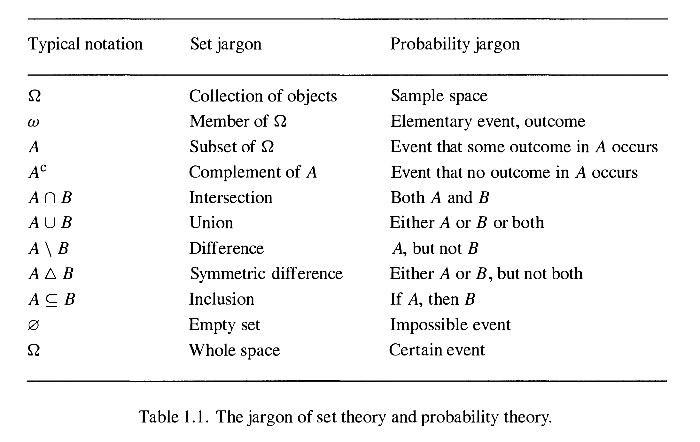
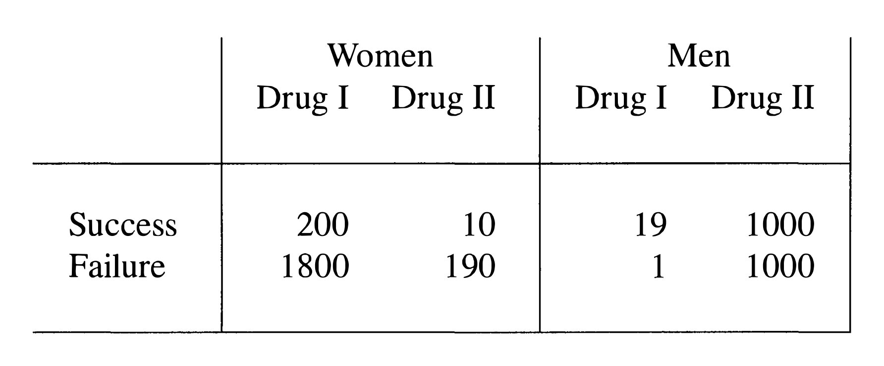

第一章 事件与概率
人类世界的存在基础中有这样一条信仰，未来是不可预测的。
例如，对于 dice(骰子) 或者 roulette(轮盘赌) 这样的游戏，如果人们能够提前预测到结果，那么这个游戏就没有存在的必要了，对游戏玩家来说，他们相信在游戏结束前游戏的结果是不确定的。
注：轮盘赌是一种赌博方式，如图所示，玩家在对应的数字处下注，然后庄家转动轮盘，轮盘停止时指向的数字就是赢家
我们使用 random(随机) 或者 probability(概率) 这样的词来表述这种有几率赢得游戏的信仰，并且我们希望能够把这种几率用具体的数字量化。
我们对概率论的主要认知建立在大量概念的基础上，关于概率的数学理论包含这些概念，但是更应该符合大众的认知，这样的理论应该把这些概念构建成公理系统，并且符合相关实验的结论。
本章包含了这个构建过程中的必要步骤。
Exercise 1. De Morgan's laws(德摩根定律) 设 A 1 , A 2 , … A_{1},A_{2},\ldots A 1 , A 2 , … ( ⋃ i A i ) c = ⋂ i A i c , ( ⋂ i A i ) c = ⋃ i A i c \left(\bigcup_{i} A_{i}\right)^{\mathrm{c}}=\bigcap_{i} A_{i}^{\mathrm{c}}, \quad\left(\bigcap_{i} A_{i}\right)^{\mathrm{c}}=\bigcup_{i} A_{i}^{\mathrm{c}} ( i ⋃ A i ) c = i ⋂ A i c , ( i ⋂ A i ) c = i ⋃ A i c A c A^{c} A c A A A
难度：★★（点击查看答案） 若 a ∈ ( ⋃ A i ) c a \in\left(\bigcup A_{i}\right)^{\mathrm{c}} a ∈ ( ⋃ A i ) c
a ∉ ⋃ A i ⇒ a ∈ A i c ⇒ ( ⋃ A i ) c ⊆ ⋂ A i c a \notin \bigcup A_{i}\Rightarrow a \in A_{i}^{\mathrm{c}}\Rightarrow \left(\bigcup A_{i}\right)^{\mathrm{c}} \subseteq \bigcap A_{i}^{\mathrm{c}} a ∈ / ⋃ A i ⇒ a ∈ A i c ⇒ ( ⋃ A i ) c ⊆ ⋂ A i c
反过来，若 a ∈ ⋂ A i c a \in \bigcap A_{i}^{\mathrm{c}} a ∈ ⋂ A i c
a ∉ A i ⇒ a ∉ ⋃ A i ⇒ ⋂ A i c ⊆ ( ⋃ A i ) c a \notin A_{i}\Rightarrow a \notin \bigcup A_{i}\Rightarrow \bigcap A_{i}^{\mathrm{c}} \subseteq\left(\bigcup A_{i}\right)^{\mathrm{c}} a ∈ / A i ⇒ a ∈ / ⋃ A i ⇒ ⋂ A i c ⊆ ( ⋃ A i ) c
另一部分的证明是类似的。
在日常生活中，我们常说这样一句话
the chance(or probability) of A is p \text{the chance(or probability) of A is p} the chance(or probability) of A is p
其中 A A A
而 p p p one-eight(八分之一) ，low(低) .
而 A A A A A A experiment(实验) 或 trial(试验) ，一次试验的 result(结果) 称为它的 outcome(结果) .
注：在英文中，result 指由原因所引起的结果，而 outcome 强调事件特有的结局，表示最终的结果。
在通常情况下，我们不能在试验结束前提前预知它的结果，我们只能列出有可能出现的结果。
Definition 1. 一次试验的所有可能结果组成的集合称为 sample space(样本空间) ，记作 Ω \Omega Ω
Example 2. 投掷一枚硬币，有 2 2 2 head(正面朝上) 记为 H H H tail(反面朝上) 记为 T T T Ω = { H , T } \Omega=\{H,T\} Ω = { H , T }
Example 3. 扔一枚骰子，有 6 6 6 Ω = { 1 , 2 , 3 , 4 , 5 , 6 } \Omega=\{1,2,3,4,5,6\} Ω = { 1 , 2 , 3 , 4 , 5 , 6 } 1 1 1 3 3 3
我们发现这些事件都能被表示成 Ω \Omega Ω A A A Example 1 中，
（1）A = { H } A=\{H\} A = { H } A = { H } ∪ { T } A=\{H\} \cup\{T\} A = { H } ∪ { T } A = { H } ∩ { T } A=\{H\} \cap\{T\} A = { H } ∩ { T } A = { H } c A=\{H\}^{c} A = { H } c
而在 Example 2 中，我们列出的事件可以表示为
（1）A = { 1 } A=\{1\} A = { 1 } A = { 2 , 4 , 6 } A=\{2,4,6\} A = { 2 , 4 , 6 } A = { 2 , 4 , 6 } ∩ { 1 , 2 , 3 } A=\{2,4,6\} \cap\{1,2,3\} A = { 2 , 4 , 6 } ∩ { 1 , 2 , 3 } A = { 2 , 4 , 6 } c A=\{2,4,6\}^{c} A = { 2 , 4 , 6 } c
如果 A A A Elementary event(基本事件) ，例如 { H } \{H\} { H } H H H
通常情况下，我们可以使用集合论中的记号来描述事件间的关系，比如 A , B A,B A , B A ∩ B A\cap B A ∩ B

若 A , B A,B A , B
A ∩ B , A ∪ B , A c A\cap B,A\cup B,A^{c} A ∩ B , A ∪ B , A c
若 A ∩ B = ∅ A\cap B=\varnothing A ∩ B = ∅ A , B A,B A , B disjoint(不相容) .
空集 ∅ \varnothing ∅ impossible event(不可能事件) ，因为其中没有元素，∅ \varnothing ∅
全集 Ω \Omega Ω certain event(必然事件) ，因为 Ω \Omega Ω
因此事件是 Ω \Omega Ω Ω \Omega Ω
现在我们考虑 Ω \Omega Ω F \mathcal{F} F F \mathcal{F} F field(域) ：
（1）若 A , B ∈ F A,B\in \mathcal{F} A , B ∈ F A ∪ B ∈ F A\cup B \in \mathcal{F} A ∪ B ∈ F A ∈ F A\in \mathcal{F} A ∈ F A c ∈ F A^{c}\in\mathcal{F} A c ∈ F ∅ ∈ F \varnothing \in \mathcal{F} ∅ ∈ F
因此，一个域 F \mathcal{F} F
A 1 , A 2 , … , A n ∈ F ⇒ ⋃ i = 1 n A i ∈ F A_{1}, A_{2}, \ldots, A_{n} \in \mathcal{F}\Rightarrow \bigcup_{i=1}^{n} A_{i} \in \mathcal{F} A 1 , A 2 , … , A n ∈ F ⇒ i = 1 ⋃ n A i ∈ F
也就是说，域 F \mathcal{F} F union(并运算) 封闭。
这在 Ω \Omega Ω Ω \Omega Ω
Example 4. 投掷一枚硬币直到出现正面朝上为止，那么样本空间为Ω = { ω 1 , ω 2 , ω 3 , … } \Omega=\left\{\omega_{1}, \omega_{2}, \omega_{3}, \ldots\right\} Ω = { ω 1 , ω 2 , ω 3 , … } ω i \omega_{i} ω i i − 1 i-1 i − 1 i i i A = { ω 2 , ω 4 , ω 6 , … } A=\left\{\omega_{2}, \omega_{4}, \omega_{6}, \ldots\right\} A = { ω 2 , ω 4 , ω 6 , … } A A A Ω \Omega Ω A ∈ F A\in \mathcal{F} A ∈ F A A A
因此，我们需要 F \mathcal{F} F
Definition 5. 考虑样本空间 Ω \Omega Ω F \mathcal{F} F F \mathcal{F} F σ \sigma σ σ 域 \sigma域 σ 域 ∅ ∈ F \varnothing \in \mathcal{F} ∅ ∈ F A 1 , A 2 , … ∈ F A_{1}, A_{2}, \ldots \in \mathcal{F} A 1 , A 2 , … ∈ F ⋃ i = 1 ∞ A i ∈ F \bigcup_{i=1}^{\infty} A_{i} \in \mathcal{F} ⋃ i = 1 ∞ A i ∈ F A ∈ F A \in \mathcal{F} A ∈ F A c ∈ F A^{c} \in \mathcal{F} A c ∈ F
Example 6. 样本空间 Ω \Omega Ω σ \sigma σ F = { ∅ , Ω } \mathcal{F}=\{\varnothing, \Omega\} F = { ∅ , Ω }
Example 7. 若 A A A Ω \Omega Ω F = { ∅ , A , A c , Ω } \mathcal{F}=\left\{\varnothing, A, A^{\mathrm{c}}, \Omega\right\} F = { ∅ , A , A c , Ω } Ω \Omega Ω σ \sigma σ
Example 8. 记 Ω \Omega Ω { 0 , 1 } Ω \{0,1\}^{\Omega} { 0 , 1 } Ω Ω \Omega Ω σ \sigma σ
Example 9. 根据定义我们知道 σ \sigma σ σ \sigma σ intersection(交运算) 也是封闭的，即A 1 , A 2 , … , ∈ F ⇒ ⋂ i A i ∈ F A_{1}, A_{2}, \ldots, \in \mathcal{F}\Rightarrow \bigcap_{i} A_{i} \in \mathcal{F} A 1 , A 2 , … , ∈ F ⇒ i ⋂ A i ∈ F
证明：根据德摩根定律，
⋂ i A i = ( ⋃ i A i c ) c \bigcap_{i} A_{i}=\left(\bigcup_{i} A_{i}^{c}\right)^{c} i ⋂ A i = ( i ⋃ A i c ) c
等式右边是可数个集合进行并运算后的补集，显然在 F \mathcal{F} F
总结一下，对于任意一个试验，有一对 ( Ω , F ) (\Omega,\mathcal{F}) ( Ω , F ) Ω \Omega Ω F \mathcal{F} F Ω \Omega Ω σ \sigma σ
Exercise 10. 设 F \mathcal{F} F σ \sigma σ A , B ∈ F A,B\in \mathcal{F} A , B ∈ F A \ B ∈ F , A △ B ∈ F A \backslash B\in \mathcal{F},\quad A \triangle B \in \mathcal{F} A \ B ∈ F , A △ B ∈ F
难度：★★（点击查看答案） A \ B = A ∩ B c = ( A c ∪ B ) c A \backslash B=A \cap B^{\mathrm{c}}=\left(A^{\mathrm{c}} \cup B\right)^{\mathrm{c}} A \ B = A ∩ B c = ( A c ∪ B ) c
A Δ B = ( A \ B ) ∪ ( B \ A ) = ( A c ∪ B ) c ∪ ( A ∪ B c ) c A \Delta B=(A \backslash B) \cup(B \backslash A)=\left(A^{\mathrm{c}} \cup B\right)^{\mathrm{c}} \cup\left(A \cup B^{\mathrm{c}}\right)^{\mathrm{c}} A Δ B = ( A \ B ) ∪ ( B \ A ) = ( A c ∪ B ) c ∪ ( A ∪ B c ) c
Exercise 11. 设 F \mathcal{F} F Ω \Omega Ω σ \sigma σ B ∈ F B \in \mathcal{F} B ∈ F G = { A ∩ B ∣ A ∈ F } \mathcal{G}=\{A \cap B\mid A \in \mathcal{F}\} G = { A ∩ B ∣ A ∈ F } B B B σ \sigma σ
难度：★★★（点击查看答案） ∅ ∈ F ⇒ ∅ = ∅ ∩ B ∈ G \varnothing \in \mathcal{F}\Rightarrow \varnothing=\varnothing \cap B \in \mathcal{G} ∅ ∈ F ⇒ ∅ = ∅ ∩ B ∈ G
A 1 , A 2 , … ∈ F ⇒ ⋃ i ( A i ∩ B ) = ( ⋃ i A i ) ∩ B ∈ G A_{1}, A_{2}, \ldots \in \mathcal{F}\Rightarrow \bigcup_{i}\left(A_{i} \cap B\right)=\left(\bigcup_{i} A_{i}\right) \cap B \in \mathcal{G} A 1 , A 2 , … ∈ F ⇒ i ⋃ ( A i ∩ B ) = ( i ⋃ A i ) ∩ B ∈ G
A ∈ F , A c ∈ F ⇒ B \ ( A ∩ B ) = A c ∩ B ∈ G A \in \mathcal{F},A^{\mathrm{c}} \in \mathcal{F}\Rightarrow B \backslash(A \cap B)=A^{\mathrm{c}} \cap B \in \mathcal{G} A ∈ F , A c ∈ F ⇒ B \ ( A ∩ B ) = A c ∩ B ∈ G
我们希望能够量化事件发生的几率，假设我们在相同条件下重复进行了 N N N A A A A A A
大量的科学试验表明，随着试验次数 N N N A A A N ( A ) N(A) N ( A ) A A A
lim n → ∞ N ( A ) N = A constant value \lim_{n\rightarrow \infty}\frac{N(A)}{N}=\text{A constant value} n → ∞ lim N N ( A ) = A constant value
我们可以用这个极限值描述 A A A P ( A ) \mathbb{P}(A) P ( A ) 0 0 0 1 1 1
设 A , B A,B A , B
N ( A ∪ B ) = N ( A ) + N ( B ) N(A\cup B)=N(A)+N(B) N ( A ∪ B ) = N ( A ) + N ( B )
因此事件 A ∪ B A\cup B A ∪ B
P ( A ∪ B ) = P ( A ) + P ( B ) \mathbb{P}(A \cup B)=\mathbb{P}(A)+\mathbb{P}(B) P ( A ∪ B ) = P ( A ) + P ( B )
根据上面的讨论，概率函数 P \mathbb{P} P finitely additive(有穷可加性) ，即
A 1 , A 2 , … , A n are disjoint ⇒ P ( ⋃ i = 1 n A i ) = ∑ i = 1 n P ( A i ) A_{1}, A_{2}, \ldots, A_{n} \text { are disjoint}\Rightarrow \mathbb{P}\left(\bigcup_{i=1}^{n} A_{i}\right)=\sum_{i=1}^{n} \mathbb{P}\left(A_{i}\right) A 1 , A 2 , … , A n are disjoint ⇒ P ( i = 1 ⋃ n A i ) = i = 1 ∑ n P ( A i )
现在我们得到的这些关系足以确定事件集中的每个事件的概率值。
我们把上面这个过程中得到的 F \mathcal{F} F probability measure(概率测度) .
Definition 1. 定义在 ( Ω , F ) (\Omega,\mathcal{F}) ( Ω , F ) P \mathbb{P} P P : F → [ 0 , 1 ] \mathbb{P}:\mathcal{F}\rightarrow[0,1] P : F → [ 0 , 1 ] P ( ∅ ) = 0 , P ( Ω ) = 1 \mathbb{P}(\varnothing)=0, \quad \mathbb{P}(\Omega)=1 P ( ∅ ) = 0 , P ( Ω ) = 1 A 1 , A 2 , … A_{1},A_{2},\ldots A 1 , A 2 , … F \mathcal{F} F i ≠ j i\neq j i = j A i ∩ A j = ∅ A_{i}\cap A_{j}=\varnothing A i ∩ A j = ∅ P ( ⋃ i = 1 ∞ A i ) = ∑ i = 1 ∞ P ( A i ) \mathbb{P}\left(\bigcup_{i=1}^{\infty} A_{i}\right)=\sum_{i=1}^{\infty} \mathbb{P}\left(A_{i}\right) P ( i = 1 ⋃ ∞ A i ) = i = 1 ∑ ∞ P ( A i ) ( Ω , F , P ) (\Omega, \mathcal{F}, \mathbb{P}) ( Ω , F , P ) probability space(概率空间)
我们可以把概率空间 ( Ω , F , P ) (\Omega, \mathcal{F}, \mathbb{P}) ( Ω , F , P )
Example 2. 投掷一枚硬币（可以是不均匀的），我们可以得到Ω = { H , T } , F = { ∅ , H , T , Ω } \Omega=\{\mathrm{H}, \mathrm{T}\},\quad \mathcal{F}=\{\varnothing, \mathrm{H}, \mathrm{T}, \Omega\} Ω = { H , T } , F = { ∅ , H , T , Ω } P ( ∅ ) = 0 , P ( H ) = p , P ( T ) = 1 − p , P ( Ω ) = 1 \mathbb{P}(\varnothing)=0, \quad \mathbb{P}(\mathrm{H})=p, \quad \mathbb{P}(\mathrm{T})=1-p, \quad \mathbb{P}(\Omega)=1 P ( ∅ ) = 0 , P ( H ) = p , P ( T ) = 1 − p , P ( Ω ) = 1 p ∈ [ 0 , 1 ] p\in [0,1] p ∈ [ 0 , 1 ] p = 1 2 p=\frac{1}{2} p = 2 1
Example 3. 投掷一枚骰子，我们可以得到Ω = { 1 , 2 , 3 , 4 , 5 , 6 } , F = { 0 , 1 } Ω \Omega=\{1,2,3,4,5,6\},\quad \mathcal{F}=\{0,1\}^{\Omega} Ω = { 1 , 2 , 3 , 4 , 5 , 6 } , F = { 0 , 1 } Ω P ( A ) = ∑ i ∈ A p i for any A ⊆ Ω \mathbb{P}(A)=\sum_{i \in A} p_{i} \quad \text { for any } \quad A \subseteq \Omega P ( A ) = i ∈ A ∑ p i for any A ⊆ Ω p 1 , p 2 , … , p 6 ∈ [ 0 , 1 ] p_{1}, p_{2}, \ldots, p_{6}\in [0,1] p 1 , p 2 , … , p 6 ∈ [ 0 , 1 ] 1 1 1 p i p_{i} p i i i i p i = 1 6 p_{i}=\frac{1}{6} p i = 6 1 P ( A ) = 1 6 ∣ A ∣ for any A ⊆ Ω \mathbb{P}(A)=\frac{1}{6}|A| \quad \text { for any } A \subseteq \Omega P ( A ) = 6 1 ∣ A ∣ for any A ⊆ Ω ∣ A ∣ |A| ∣ A ∣ A A A
三元组 ( Ω , F , P ) (\Omega, \mathcal{F}, \mathbb{P}) ( Ω , F , P )
Lemma 4. 对于事件 A A A P ( A c ) = 1 − P ( A ) \mathbb{P}\left(A^{\mathrm{c}}\right)=1-\mathbb{P}(A) P ( A c ) = 1 − P ( A )
证明：我们知道
A ∪ A c = Ω , A ∩ A c = ∅ A \cup A^{\mathrm{c}}=\Omega,\quad A \cap A^{\mathrm{c}}=\varnothing A ∪ A c = Ω , A ∩ A c = ∅
因此，根据概率测度的定义，
P ( A ∪ A c ) = P ( A ) + P ( A c ) = 1 \mathbb{P}\left(A \cup A^{c}\right)=\mathbb{P}(A)+\mathbb{P}\left(A^{c}\right)=1 P ( A ∪ A c ) = P ( A ) + P ( A c ) = 1
Lemma 5. 对于两事件 A , B A,B A , B B ⊇ A B \supseteq A B ⊇ A P ( B ) = P ( A ) + P ( B \ A ) ≥ P ( A ) \mathbb{P}(B)=\mathbb{P}(A)+\mathbb{P}(B \backslash A) \geq \mathbb{P}(A) P ( B ) = P ( A ) + P ( B \ A ) ≥ P ( A )
证明：引理中，B \ A B\backslash A B \ A B B B A A A
B = A ∪ ( B \ A ) , B=A \cup(B \backslash A),\quad B = A ∪ ( B \ A ) ,
且 A A A B \ A B\backslash A B \ A
P ( B ) = P ( A ) + P ( B \ A ) ≥ P ( A ) \mathbb{P}(B)=\mathbb{P}(A)+\mathbb{P}(B \backslash A)\geq \mathbb{P}(A) P ( B ) = P ( A ) + P ( B \ A ) ≥ P ( A )
注：在使用 P ( B \ A ) \mathbb{P}(B \backslash A) P ( B \ A ) B \ A ∈ F B \backslash A \in \mathcal{F} B \ A ∈ F Exercise 1.2.10 中证明。
Lemma 6. 对于两个事件 A , B A,B A , B P ( A ∪ B ) = P ( A ) + P ( B ) − P ( A ∩ B ) \mathbb{P}(A \cup B)=\mathbb{P}(A)+\mathbb{P}(B)-\mathbb{P}(A \cap B) P ( A ∪ B ) = P ( A ) + P ( B ) − P ( A ∩ B ) n n n A 1 , A 2 , … , A n A_{1}, A_{2}, \ldots, A_{n} A 1 , A 2 , … , A n P ( ⋃ i = 1 n A i ) = ∑ i P ( A i ) − ∑ i < j P ( A i ∩ A j ) + ∑ i < j < k P ( A i ∩ A j ∩ A k ) − ⋯ + ( − 1 ) n + 1 P ( A 1 ∩ A 2 ∩ ⋯ ∩ A n ) \begin{aligned}\mathbb{P}\left(\bigcup_{i=1}^{n} A_{i}\right)=& \sum_{i} \mathbb{P}\left(A_{i}\right)-\sum_{i<j} \mathbb{P}\left(A_{i} \cap A_{j}\right)+\sum_{i<j<k} \mathbb{P}\left(A_{i} \cap A_{j} \cap A_{k}\right)-\cdots \\&+(-1)^{n+1} \mathbb{P}\left(A_{1} \cap A_{2} \cap \cdots \cap A_{n}\right)\end{aligned} P ( i = 1 ⋃ n A i ) = i ∑ P ( A i ) − i < j ∑ P ( A i ∩ A j ) + i < j < k ∑ P ( A i ∩ A j ∩ A k ) − ⋯ + ( − 1 ) n + 1 P ( A 1 ∩ A 2 ∩ ⋯ ∩ A n )
证明：由于 A ∪ B = A ∪ ( B \ A ) A \cup B=A \cup(B \backslash A) A ∪ B = A ∪ ( B \ A ) Lemma 5 ，
P ( A ∪ B ) = P ( A ) + P ( B \ A ) = P ( A ) + P ( B \ ( A ∩ B ) ) = P ( A ) + P ( B ) − P ( A ∩ B ) \begin{aligned}\mathbb{P}(A \cup B) &=\mathbb{P}(A)+\mathbb{P}(B \backslash A)=\mathbb{P}(A)+\mathbb{P}(B \backslash(A \cap B)) \\&=\mathbb{P}(A)+\mathbb{P}(B)-\mathbb{P}(A \cap B)\end{aligned} P ( A ∪ B ) = P ( A ) + P ( B \ A ) = P ( A ) + P ( B \ ( A ∩ B ) ) = P ( A ) + P ( B ) − P ( A ∩ B )
我们数学归纳法可以证明 n n n m ≥ 2 m\geq 2 m ≥ 2 n ≤ m n\leq m n ≤ m
P ( ⋃ i = 1 m + 1 A i ) = P ( ⋃ 1 = 1 m A i ) + P ( A m + 1 ) − P { ( ⋃ i = 1 m A i ) ∩ A m + 1 } = P ( ⋃ i = 1 m A i ) + P ( A m + 1 ) − P { ⋃ i = 1 m ( A i ∩ A m + 1 ) } \begin{aligned}
\mathbb{P}\left(\bigcup_{i=1}^{m+1} A_{i}\right) &=\mathbb{P}\left(\bigcup_{1=1}^{m} A_{i}\right)+\mathbb{P}\left(A_{m+1}\right)-\mathbb{P}\left\{\left(\bigcup_{i=1}^{m} A_{i}\right) \cap A_{m+1}\right\} \\
&=\mathbb{P}\left(\bigcup_{i=1}^{m} A_{i}\right)+\mathbb{P}\left(A_{m+1}\right)-\mathbb{P}\left\{\bigcup_{i=1}^{m}\left(A_{i} \cap A_{m+1}\right)\right\}
\end{aligned} P ( i = 1 ⋃ m + 1 A i ) = P ( 1 = 1 ⋃ m A i ) + P ( A m + 1 ) − P { ( i = 1 ⋃ m A i ) ∩ A m + 1 } = P ( i = 1 ⋃ m A i ) + P ( A m + 1 ) − P { i = 1 ⋃ m ( A i ∩ A m + 1 ) }
等式右边的项展开后即可得到结果。
在上面的证明过程中，我们多次用到不相容事件的并的概率测度等于每个事件概率测度的和，可以看出，有些时候求事件交的概率测度比求事件并的概率测度要容易一些。
下面的这条性质更加高科技，并且说明了 P \mathbb{P} P P \mathbb{P} P countable additive(可数可加性)
Lemma 7. 设 A 1 , A 2 , … A_{1},A_{2},\dots A 1 , A 2 , … A 1 ⊆ A 2 ⊆ A 3 ⊆ ⋯ A_{1} \subseteq A_{2} \subseteq A_{3} \subseteq \cdots A 1 ⊆ A 2 ⊆ A 3 ⊆ ⋯ A A A A = ⋃ i = 1 ∞ A i = lim i → ∞ A i A=\bigcup_{i=1}^{\infty} A_{i}=\lim _{i \rightarrow \infty} A_{i} A = i = 1 ⋃ ∞ A i = i → ∞ lim A i P ( A ) = lim i → ∞ P ( A i ) \mathbb{P}(A)=\lim _{i \rightarrow \infty} \mathbb{P}\left(A_{i}\right) P ( A ) = i → ∞ lim P ( A i ) B 1 , B 2 , … B_{1},B_{2},\dots B 1 , B 2 , … B 1 ⊇ B 2 ⊇ B 3 ⊇ ⋯ B_{1} \supseteq B_{2} \supseteq B_{3} \supseteq \cdots B 1 ⊇ B 2 ⊇ B 3 ⊇ ⋯ B B B B = ⋂ i = 1 ∞ B i = lim i → ∞ B i B=\bigcap_{i=1}^{\infty} B_{i}=\lim _{i \rightarrow \infty} B_{i} B = i = 1 ⋂ ∞ B i = i → ∞ lim B i P ( B ) = lim i → ∞ P ( B i ) \mathbb{P}(B)=\lim _{i \rightarrow \infty} \mathbb{P}\left(B_{i}\right) P ( B ) = i → ∞ lim P ( B i )
证明：由于
A = A 1 ∪ ( A 2 \ A 1 ) ∪ ( A 3 \ A 2 ) ∪ ⋯ A=A_{1} \cup\left(A_{2} \backslash A_{1}\right) \cup\left(A_{3} \backslash A_{2}\right) \cup \cdots A = A 1 ∪ ( A 2 \ A 1 ) ∪ ( A 3 \ A 2 ) ∪ ⋯
是一系列不相容事件的并集，因此
P ( A ) = P ( A 1 ) + ∑ i = 1 ∞ P ( A i + 1 \ A i ) = P ( A 1 ) + lim n → ∞ ∑ i = 1 n − 1 [ P ( A i + 1 ) − P ( A i ) ] = lim n → ∞ P ( A n ) \begin{aligned}
\mathbb{P}(A) &=\mathbb{P}\left(A_{1}\right)+\sum_{i=1}^{\infty} \mathbb{P}\left(A_{i+1} \backslash A_{i}\right) \\
&=\mathbb{P}\left(A_{1}\right)+\lim _{n \rightarrow \infty} \sum_{i=1}^{n-1}\left[\mathbb{P}\left(A_{i+1}\right)-\mathbb{P}\left(A_{i}\right)\right] \\
&=\lim _{n \rightarrow \infty} \mathbb{P}\left(A_{n}\right)
\end{aligned} P ( A ) = P ( A 1 ) + i = 1 ∑ ∞ P ( A i + 1 \ A i ) = P ( A 1 ) + n → ∞ lim i = 1 ∑ n − 1 [ P ( A i + 1 ) − P ( A i ) ] = n → ∞ lim P ( A n )
对于递减事件的情况，取其补集即可证明。
最后我们来看一些术语。
若事件 A A A P ( A ) = 0 \mathbb{P}(A)=0 P ( A ) = 0 A A A null(空事件) .
若事件 A A A P ( A ) = 1 \mathbb{P}(A)=1 P ( A ) = 1 A A A occurs almost surely(几乎必然发生) .
不要把空事件与不可能事件混淆，空事件在我们身边时有发生，虽然它们发生的概率为零，比如说，扔飞镖至靶上任意一点的概率是 0 0 0
因此，不可能事件是空事件，而空事件不一定是不可能事件。
Example 8. 重复投掷一枚均匀的硬币，总会出现正面朝上的情况，这是因为P ( some head turns up ) = 1 − P ( no head ever ) = 1 − lim n → ∞ P ( no head in first n tosses ) = 1 − lim n → ∞ 2 − n = 1 \begin{aligned}\mathbb{P}(\text {some head turns up})&=1-\mathbb{P}(\text {no head ever})\\&=1-\lim _{n \rightarrow \infty} \mathbb{P}(\text {no head in first n tosses})\\&=1-\lim _{n \rightarrow \infty} 2^{-n}=1\end{aligned} P ( some head turns up ) = 1 − P ( no head ever ) = 1 − n → ∞ lim P ( no head in first n tosses ) = 1 − n → ∞ lim 2 − n = 1 s s s k k k k k k s s s 2 − k 2^{-k} 2 − k 前 n n n s s s 是 s s s n k nk n k P ( s turns up eventually ) = lim n → ∞ P ( s occurs in the first n k tosses ) ≥ lim n → ∞ P ( s occurs as one of the first n groups ) = 1 − lim n → ∞ P ( none of the first n groups is s ) = 1 − lim n → ∞ ( 1 − 2 − k ) n = 1 \begin{aligned}\mathbb{P}(s \text { turns up eventually})&=\lim _{n \rightarrow \infty} \mathbb{P}(s \text { occurs in the first } n k \text { tosses})\\&\geq\lim_{n\rightarrow \infty} \mathbb{P}(s \text { occurs as one of the first } n \text { groups})\\&=1-\lim _{n \rightarrow \infty} \mathbb{P}(\text {none of the first } n \text { groups is } s)\\&=1-\lim _{n \rightarrow \infty}\left(1-2^{-k}\right)^{n}=1\end{aligned} P ( s turns up eventually ) = n → ∞ lim P ( s occurs in the first n k tosses ) ≥ n → ∞ lim P ( s occurs as one of the first n groups ) = 1 − n → ∞ lim P ( none of the first n groups is s ) = 1 − n → ∞ lim ( 1 − 2 − k ) n = 1
根据这则例子，我们可以理解著名的 Murphy's Law(墨菲定律) ：
If anything can go wrong, it will. \text{If anything can go wrong, it will.} If anything can go wrong, it will.
如果事情有变坏的可能，不管这种可能性有多小，它总会发生。墨菲定律本质上阐述了任何小概率事件都有可能发生。
比如在上面的例子中，连续投掷一枚硬币 10 10 1 0
Exercise 9. 设事件 A , B A,B A , B P ( A ) = 3 4 , P ( B ) = 1 3 \mathbb{P}(A)=\frac{3}{4},\mathbb{P}(B)=\frac{1}{3} P ( A ) = 4 3 , P ( B ) = 3 1 1 12 ≤ P ( A ∩ B ) ≤ 1 3 \frac{1}{12} \leq \mathbb{P}(A \cap B) \leq \frac{1}{3} 1 2 1 ≤ P ( A ∩ B ) ≤ 3 1 P ( A ∪ B ) \mathbb{P}(A \cup B) P ( A ∪ B )
难度：★★（点击查看答案） P ( A ∩ B ) = P ( A ) + P ( B ) − P ( A ∪ B ) ≥ P ( A ) + P ( B ) − 1 = 1 12 \mathbb{P}(A \cap B)=\mathbb{P}(A)+\mathbb{P}(B)-\mathbb{P}(A \cup B) \geq \mathbb{P}(A)+\mathbb{P}(B)-1=\frac{1}{12} P ( A ∩ B ) = P ( A ) + P ( B ) − P ( A ∪ B ) ≥ P ( A ) + P ( B ) − 1 = 1 2 1
P ( A ∩ B ) ≤ min { P ( A ) , P ( B ) } = 1 3 \mathbb{P}(A \cap B) \leq \min \{\mathbb{P}(A), \mathbb{P}(B)\}=\frac{1}{3} P ( A ∩ B ) ≤ min { P ( A ) , P ( B ) } = 3 1
P ( A ∪ B ) ≤ P ( A ) + P ( B ) − P ( A ∩ B ) ≤ min { P ( A ) + P ( B ) , 1 } = 1 \mathbb{P}(A \cup B)\leq \mathbb{P}(A)+\mathbb{P}(B)-\mathbb{P}(A \cap B) \leq \min \{\mathbb{P}(A)+\mathbb{P}(B), 1\}=1 P ( A ∪ B ) ≤ P ( A ) + P ( B ) − P ( A ∩ B ) ≤ min { P ( A ) + P ( B ) , 1 } = 1
P ( A ∪ B ) ≥ max { P ( A ) , P ( B ) } = 3 4 \mathbb{P}(A \cup B) \geq \max \{\mathbb{P}(A), \mathbb{P}(B)\}=\frac{3}{4} P ( A ∪ B ) ≥ max { P ( A ) , P ( B ) } = 4 3
Exercise 10. 证明 Boole's inequality(布尔不等式) ：P ( ⋃ i = 1 n A i ) ≤ ∑ i = 1 n P ( A i ) , P ( ⋂ i = 1 n A i ) ≥ 1 − ∑ i = 1 n P ( A i c ) \mathbb{P}\left(\bigcup_{i=1}^{n} A_{i}\right) \leq \sum_{i=1}^{n} \mathbb{P}\left(A_{i}\right), \quad \mathbb{P}\left(\bigcap_{i=1}^{n} A_{i}\right) \geq 1-\sum_{i=1}^{n} \mathbb{P}\left(A_{i}^{\mathrm{c}}\right) P ( i = 1 ⋃ n A i ) ≤ i = 1 ∑ n P ( A i ) , P ( i = 1 ⋂ n A i ) ≥ 1 − i = 1 ∑ n P ( A i c )
难度：★★★（点击查看答案） 先证第一个式子，当 n = 1 n=1 n = 1 n ≤ m n\leq m n ≤ m
P ( ⋃ i = 1 m + 1 A i ) = P ( ⋃ i = 1 m A i ) + P ( A m + 1 ) − P ( ⋃ i = 1 m ( A i ∩ A m + 1 ) ) ≤ P ( ⋃ i = 1 m A i ) + P ( A m + 1 ) ≤ ∑ i = 1 m + 1 P ( A i ) \begin{aligned}
\mathbb{P}\left(\bigcup_{i=1}^{m+1} A_{i}\right) &=\mathbb{P}\left(\bigcup_{i=1}^{m} A_{i}\right)+\mathbb{P}\left(A_{m+1}\right)-\mathbb{P}\left(\bigcup_{i=1}^{m}\left(A_{i} \cap A_{m+1}\right)\right) \\
& \leq \mathbb{P}\left(\bigcup_{i=1}^{m} A_{i}\right)+\mathbb{P}\left(A_{m+1}\right) \leq \sum_{i=1}^{m+1} \mathbb{P}\left(A_{i}\right)
\end{aligned} P ( i = 1 ⋃ m + 1 A i ) = P ( i = 1 ⋃ m A i ) + P ( A m + 1 ) − P ( i = 1 ⋃ m ( A i ∩ A m + 1 ) ) ≤ P ( i = 1 ⋃ m A i ) + P ( A m + 1 ) ≤ i = 1 ∑ m + 1 P ( A i )
第一个式子说明了一组事件同时发生的概率不大于单个事件的概率之和，证明第二个式子：
P ( ⋂ i = 1 n A i ) = P ( ( ⋃ i = 1 n A i c ) c ) = 1 − P ( ⋃ i = 1 n A i c ) ≥ 1 − ∑ 1 n P ( A i c ) \mathbb{P}\left(\bigcap_{i=1}^{n} A_{i}\right)=\mathbb{P}\left(\left(\bigcup_{i=1}^{n} A_{i}^{\mathrm{c}}\right)^{\mathrm{c}}\right)=1-\mathbb{P}\left(\bigcup_{i=1}^{n} A_{i}^{\mathrm{c}}\right) \geq 1-\sum_{1}^{n} \mathbb{P}\left(A_{i}^{\mathrm{c}}\right) P ( i = 1 ⋂ n A i ) = P ( ( i = 1 ⋃ n A i c ) c ) = 1 − P ( i = 1 ⋃ n A i c ) ≥ 1 − 1 ∑ n P ( A i c )
Exercise 11. 设 r ≥ 1 r\geq 1 r ≥ 1 A r A_{r} A r r r r P ( A r ) = 1 \mathbb{P}(A_{r})=1 P ( A r ) = 1 P ( ⋂ r = 1 ∞ A r ) = 1 \mathbb{P}\left(\bigcap_{r=1}^{\infty} A_{r}\right)=1 P ( r = 1 ⋂ ∞ A r ) = 1
难度：★★★（点击查看答案） 根据布尔不等式有：
P ( ⋂ r = 1 ∞ A r ) = lim n → ∞ P ( ⋂ r = 1 n A r ) = lim n → ∞ [ 1 − P ( ( ⋂ r = 1 n A r ) c ) ] = 1 − lim n → ∞ P ( ⋃ r = 1 n A r c ) ≥ 1 − lim n → ∞ ∑ r = 1 n P ( A r c ) = 1 \begin{aligned}
\mathbb{P}\left(\bigcap_{r=1}^{\infty} A_{r}\right) &=\lim _{n \rightarrow \infty} \mathbb{P}\left(\bigcap_{r=1}^{n} A_{r}\right)=\lim _{n \rightarrow \infty}\left[1-\mathbb{P}\left(\left(\bigcap_{r=1}^{n} A_{r}\right)^{c}\right)\right] \\
&=1-\lim _{n \rightarrow \infty} \mathbb{P}\left(\bigcup_{r=1}^{n} A_{r}^{c}\right) \geq 1-\lim _{n \rightarrow \infty} \sum_{r=1}^{n} \mathbb{P}\left(A_{r}^{c}\right)=1
\end{aligned} P ( r = 1 ⋂ ∞ A r ) = n → ∞ lim P ( r = 1 ⋂ n A r ) = n → ∞ lim [ 1 − P ( ( r = 1 ⋂ n A r ) c ) ] = 1 − n → ∞ lim P ( r = 1 ⋃ n A r c ) ≥ 1 − n → ∞ lim r = 1 ∑ n P ( A r c ) = 1
Exercise 12. 给定一组事件 A r A_{r} A r 1 ≤ r ≤ n 1\leq r\leq n 1 ≤ r ≤ n A r A_{r} A r P ( A r ) = p , P ( A r ∩ A s ) = q , r ≠ s \mathbb{P}\left(A_{r}\right)=p,\quad \mathbb{P}\left(A_{r} \cap A_{s}\right)=q, r \neq s P ( A r ) = p , P ( A r ∩ A s ) = q , r = s p ≥ 1 n p\geq \frac{1}{n} p ≥ n 1 q ≤ 2 n q\leq \frac{2}{n} q ≤ n 2
难度：★★★★（点击查看答案） 1 = P ( ⋃ i = 1 n A r ) = ∑ r P ( A r ) − ∑ r < s P ( A r ∩ A s ) = n p − 1 2 n ( n − 1 ) q 1=\mathbb{P}\left(\bigcup_{i=1}^{n} A_{r}\right)=\sum_{r} \mathbb{P}\left(A_{r}\right)-\sum_{r<s} \mathbb{P}\left(A_{r} \cap A_{s}\right)=n p-\frac{1}{2} n(n-1) q 1 = P ( i = 1 ⋃ n A r ) = r ∑ P ( A r ) − r < s ∑ P ( A r ∩ A s ) = n p − 2 1 n ( n − 1 ) q
p = 1 n + 1 2 ( n − 1 ) q ≥ 1 n p=\frac{1}{n}+\frac{1}{2}(n-1)q\geq \frac{1}{n} p = n 1 + 2 1 ( n − 1 ) q ≥ n 1
q = 2 ( n p − 1 ) n ( n − 1 ) ≤ 2 ( n − 1 ) n ( n − 1 ) = 2 n q=\frac{2(np-1)}{n(n-1)}\leq\frac{2(n-1)}{n(n-1)}=\frac{2}{n} q = n ( n − 1 ) 2 ( n p − 1 ) ≤ n ( n − 1 ) 2 ( n − 1 ) = n 2
Exercise 13. 给定一组事件 A r A_{r} A r 1 ≤ r ≤ n 1\leq r\leq n 1 ≤ r ≤ n A r A_{r} A r 1 2 \frac{1}{2} 2 1 P ( A r ) = p , P ( A r ∩ A s ) = q , r ≠ s \mathbb{P}\left(A_{r}\right)=p,\quad \mathbb{P}\left(A_{r} \cap A_{s}\right)=q, r \neq s P ( A r ) = p , P ( A r ∩ A s ) = q , r = s P ( A r ∩ A s ∩ A t ) = x , r < s < t \mathbb{P}\left(A_{r} \cap A_{s} \cap A_{t}\right)=x, r<s<t P ( A r ∩ A s ∩ A t ) = x , r < s < t p ≥ 3 2 n p\geq \frac{3}{2n} p ≥ 2 n 3 q ≤ 4 n − 5 n ( n − 1 ) q\leq \frac{4n-5}{n(n-1)} q ≤ n ( n − 1 ) 4 n − 5
难度：★★★★★（点击查看答案） 由于 A r A_{r} A r
1 = P ( ⋃ i = 1 n A r ) = ∑ r P ( A r ) − ∑ r < s P ( A r ∩ A s ) + ∑ r < s < t P ( A r ∩ A s ∩ A t ) = n p − ( n 2 ) q + ( n 3 ) x \begin{aligned}
1=\mathbb{P}\left(\bigcup_{i=1}^{n} A_{r}\right) &=\sum_{r} \mathbb{P}\left(A_{r}\right)-\sum_{r<s} \mathbb{P}\left(A_{r} \cap A_{s}\right)+\sum_{r<s<t} \mathbb{P}\left(A_{r} \cap A_{s} \cap A_{t}\right) \\
&=n p-\binom{n}{2} q+\binom{n}{3} x
\end{aligned} 1 = P ( i = 1 ⋃ n A r ) = r ∑ P ( A r ) − r < s ∑ P ( A r ∩ A s ) + r < s < t ∑ P ( A r ∩ A s ∩ A t ) = n p − ( 2 n ) q + ( 3 n ) x
由于 A r A_{r} A r 1 2 \frac{1}{2} 2 1
1 2 = P ( ⋃ r < s ( A r ∩ A s ) ) = ∑ r < s P ( A r ∩ A s ) − 1 2 ∑ r < s , t < u ( r , s ) ≠ ( t , u ) P ( A r ∩ A s ∩ A t ∩ A u ) + ⋯ = ( n 2 ) q − 3 ( n 3 ) x + ( n 3 ) x \begin{aligned}
\frac{1}{2}=\mathbb{P}\left(\bigcup_{r<s}\left(A_{r} \cap A_{s}\right)\right)&=\sum_{r<s} \mathbb{P}\left(A_{r} \cap A_{s}\right)-\frac{1}{2} \sum_{r<s,t<u \atop(r, s) \neq(t, u)} \mathbb{P}\left(A_{r} \cap A_{s} \cap A_{t} \cap A_{u}\right)+\cdots \\
&=\binom{n}{2}q-3\binom{n}{3}x+\binom{n}{3}x
\end{aligned} 2 1 = P ( r < s ⋃ ( A r ∩ A s ) ) = r < s ∑ P ( A r ∩ A s ) − 2 1 ( r , s ) = ( t , u ) r < s , t < u ∑ P ( A r ∩ A s ∩ A t ∩ A u ) + ⋯ = ( 2 n ) q − 3 ( 3 n ) x + ( 3 n ) x
这一点不太好推导，我们需要仔细考虑后面的项中有贡献的部分。
对于四项式，需要满足 r < s , t < u , ( r , s ) ≠ ( t , u ) r<s,t<u,(r,s)\neq (t,u) r < s , t < u , ( r , s ) = ( t , u )
{ r = t ： s < u or s > u r = u ： t < s s = t ： r < u s = u ： r < t or r > t ⇒ A n s = − 1 2 × 6 = − 3 \left\{\begin{array}{ll}
r=t：s<u \text{ or } s>u\\
r=u：t<s \\
s=t：r<u\\
s=u：r<t \text{ or } r>t
\end{array}\right.\Rightarrow Ans=-\frac{1}{2}\times 6=-3 ⎩ ⎪ ⎪ ⎪ ⎨ ⎪ ⎪ ⎪ ⎧ r = t ： s < u or s > u r = u ： t < s s = t ： r < u s = u ： r < t or r > t ⇒ A n s = − 2 1 × 6 = − 3
对于六项式，需要满足 r < s , t < u , v < w r<s,t<u,v<w r < s , t < u , v < w ( r , s ) , ( t , u ) , ( v , w ) (r,s),(t,u),(v,w) ( r , s ) , ( t , u ) , ( v , w ) ( v , w ) (v,w) ( v , w )
{ r = t ： { s < u ： v = s , w = u s > u ： v = u , w = s r = u ： t < s ： v = t , w = s s = t ： r < u ： v = r , w = u s = u ： { r < t ： v = r , w = t r > t ： v = t , w = r ⇒ A n s = 1 6 × 6 = 1 \left\{\begin{array}{ll}
r=t：\left\{\begin{matrix}
s<u：v=s,w=u \\
s>u：v=u,w=s
\end{matrix}\right.\\
r=u：t<s：v=t,w=s \\
s=t：r<u：v=r,w=u\\
s=u：\left\{\begin{matrix}
r<t：v=r,w=t \\
r>t：v=t,w=r
\end{matrix}\right.
\end{array}\right.\Rightarrow Ans=\frac{1}{6}\times 6=1 ⎩ ⎪ ⎪ ⎪ ⎪ ⎪ ⎪ ⎪ ⎨ ⎪ ⎪ ⎪ ⎪ ⎪ ⎪ ⎪ ⎧ r = t ： { s < u ： v = s , w = u s > u ： v = u , w = s r = u ： t < s ： v = t , w = s s = t ： r < u ： v = r , w = u s = u ： { r < t ： v = r , w = t r > t ： v = t , w = r ⇒ A n s = 6 1 × 6 = 1
从八项式开始，就没有贡献了。注意到 q q q 0 0 0 q q q
p = 3 2 n + ( n − 1 ) ( n − 2 ) 6 x ≥ 3 2 n p=\frac{3}{2n}+\frac{(n-1)(n-2)}{6}x\geq \frac{3}{2n} p = 2 n 3 + 6 ( n − 1 ) ( n − 2 ) x ≥ 2 n 3
而 x x x 1 1 1 x x x
q = 2 n p − 5 2 ( n 2 ) ≤ 4 n − 5 n ( n − 1 ) q=\frac{2np-\frac{5}{2}}{\binom{n}{2}}\leq \frac{4n-5}{n(n-1)} q = ( 2 n ) 2 n p − 2 5 ≤ n ( n − 1 ) 4 n − 5
现实中存在许多如下形式的关于概率的描述
if B occurs, then the probability of A is p \text{if B occurs, then the probability of A is p} if B occurs, then the probability of A is p
其中，A , B A,B A , B p p p
假设我们重复进行了 N N N A , B A,B A , B
现在换一种视角，仅考虑事件 B B B A A A
N ( A ∩ B ) N ( B ) = N ( A ∩ B ) N N ( B ) N \frac{N(A \cap B)}{N(B)}=\frac{\frac{N(A\cap B)}{N}}{\frac{N(B)}{N}} N ( B ) N ( A ∩ B ) = N N ( B ) N N ( A ∩ B )
因此，在事件 B B B A A A
P ( A ∩ B ) P ( B ) \frac{\mathbb{P}(A\cap B)}{\mathbb{P}(B)} P ( B ) P ( A ∩ B )
Definition 1. 若 P ( B ) > 0 \mathbb{P}(B)>0 P ( B ) > 0 B B B A A A conditional probability(条件概率) 定义为P ( A ∣ B ) = P ( A ∩ B ) P ( B ) \mathbb{P}(A | B)=\frac{\mathbb{P}(A \cap B)}{\mathbb{P}(B)} P ( A ∣ B ) = P ( B ) P ( A ∩ B )
Example 2. 投掷两个均匀的骰子，已知第一个骰子点数为 3 3 3 6 6 6
显然答案是 1 2 \frac{1}{2} 2 1 6 6 6 { 4 , 5 , 6 } \{4,5,6\} { 4 , 5 , 6 }
我们尝试用条件概率解释它，取 Ω = { 1 , 2 , 3 , 4 , 5 , 6 } 2 , F = { 0 , 1 } Ω \Omega=\{1,2,3,4,5,6\}^{2},\mathcal{F}=\{0,1\}^{\Omega} Ω = { 1 , 2 , 3 , 4 , 5 , 6 } 2 , F = { 0 , 1 } Ω
P ( A ) = ∣ A ∣ 36 , for any A ⊆ Ω \mathbb{P}(A)=\frac{|A|}{36} ,\quad \text{for any } A \subseteq \Omega P ( A ) = 3 6 ∣ A ∣ , for any A ⊆ Ω
设事件 B B B 3 3 3 A A A 6 6 6
B = { ( 3 , b ) ∣ 1 ≤ b ≤ 6 } A = { ( a , b ) ∣ a + b > 6 } A ∩ B = { ( 3 , 4 ) , ( 3 , 5 ) , ( 3 , 6 ) } \begin{aligned}B&=\{(3, b)\mid 1 \leq b \leq 6\} \\ A&=\{(a, b)\mid a+b>6\}\\A \cap B&=\{(3,4),(3,5),(3,6)\}\end{aligned} B A A ∩ B = { ( 3 , b ) ∣ 1 ≤ b ≤ 6 } = { ( a , b ) ∣ a + b > 6 } = { ( 3 , 4 ) , ( 3 , 5 ) , ( 3 , 6 ) }
因此
P ( A ∣ B ) = P ( A ∩ B ) P ( B ) = ∣ A ∩ B ∣ ∣ B ∣ = 3 6 \mathbb{P}(A | B)=\frac{\mathbb{P}(A \cap B)}{\mathbb{P}(B)}=\frac{|A \cap B|}{|B|}=\frac{3}{6} P ( A ∣ B ) = P ( B ) P ( A ∩ B ) = ∣ B ∣ ∣ A ∩ B ∣ = 6 3
注：对于两集合 A , B A,B A , B A × B = { ( a , b ) ∣ a ∈ A , b ∈ B } A\times B=\{(a,b)\mid a\in A,b\in B\} A × B = { ( a , b ) ∣ a ∈ A , b ∈ B } A 2 = A × A A^{2}=A\times A A 2 = A × A { 1 , 2 , 3 , 4 , 5 , 6 } 2 = { ( a , b ) ∣ 1 ≤ a , b ≤ 6 } \{1,2,3,4,5,6\}^{2}=\{(a,b)\mid 1\leq a,b\leq 6\} { 1 , 2 , 3 , 4 , 5 , 6 } 2 = { ( a , b ) ∣ 1 ≤ a , b ≤ 6 }
Example 3. 某家庭中有两个孩子，求已知至少有一个男孩的条件下，两个孩子都是男孩的概率是多少？
所有可能的情况共 4 4 4
Ω = { G G , G B , B G , B B } \Omega=\{\mathrm{GG}, \mathrm{GB}, \mathrm{BG}, \mathrm{BB}\} Ω = { G G , G B , B G , B B }
其中，P ( G G ) = P ( B B ) = P ( G B ) = P ( B G ) = 1 4 \mathbb{P}(\mathrm{GG})=\mathbb{P}(\mathrm{BB})=\mathbb{P}(\mathrm{GB})=\mathbb{P}(\mathrm{BG})=\frac{1}{4} P ( G G ) = P ( B B ) = P ( G B ) = P ( B G ) = 4 1
P ( B B ∣ one boy at least ) = P ( B B ∣ G B ∪ B G ∪ B B ) = P ( B B ∩ ( G B ∪ B G ∪ B B ) ) P ( G B ∪ B G ∪ B B ) = P ( B B ) P ( G B ∪ B G ∪ B B ) = 1 3 \begin{aligned}
\mathbb{P}(\mathrm{BB} | \text {one boy at least}) &=\mathbb{P}(\mathrm{BB} | \mathrm{GB} \cup \mathrm{BG} \cup \mathrm{BB}) \\
&=\frac{\mathbb{P}(\mathrm{BB} \cap(\mathrm{GB} \cup \mathrm{BG} \cup\mathrm{BB}))}{\mathbb{P}(\mathrm{GB} \cup \mathrm{BG} \cup \mathrm{BB})} \\
&=\frac{\mathbb{P}(\mathrm{BB})}{\mathbb{P}(\mathrm{GB} \cup \mathrm{BG} \cup\mathrm{BB})}=\frac{1}{3}
\end{aligned} P ( B B ∣ one boy at least ) = P ( B B ∣ G B ∪ B G ∪ B B ) = P ( G B ∪ B G ∪ B B ) P ( B B ∩ ( G B ∪ B G ∪ B B ) ) = P ( G B ∪ B G ∪ B B ) P ( B B ) = 3 1
很多人会把这个问题的答案算成 1 2 \frac{1}{2} 2 1
P ( B B ∣ one child is a boy ) = P ( the other child is a boy ) \mathbb{P}(\mathrm{BB} | \text {one child is a boy})=\mathbb{P}(\text {the other child is a boy}) P ( B B ∣ one child is a boy ) = P ( the other child is a boy )
然而这是不正确的，因为对于左边的概率测度，样本空间为 { B B , G B , B G } \{\mathrm{BB},\mathrm{GB},\mathrm{BG}\} { B B , G B , B G } { B B , G B , B G , G G } \{\mathrm{BB},\mathrm{GB},\mathrm{BG},\mathrm{GG}\} { B B , G B , B G , G G }
现在我们修改一下问题，求已知年龄较小的那个孩子是男孩的条件下，两个孩子都是男孩的概率。
P ( B B ∣ younger is a boy ) = P ( B B ∣ G B ∪ B B ) = P ( B B ∩ ( G B ∪ B ) ) P ( G B ∪ B B ) = P ( B B ) P ( G B ∪ B B ) = 1 2 \begin{aligned}
\mathbb{P}(\mathrm{BB} | \text {younger is a boy}) &=\mathbb{P}(\mathrm{BB} | \mathrm{GB} \cup \mathrm{BB}) \\
&=\frac{\mathbb{P}(\mathrm{BB} \cap(\mathrm{GB} \cup \mathrm{B}))}{\mathbb{P}(\mathrm{GB} \cup \mathrm{BB})}=\frac{\mathbb{P}(\mathrm{BB})}{\mathbb{P}(\mathrm{GB} \cup \mathrm{BB})}=\frac{1}{2}
\end{aligned} P ( B B ∣ younger is a boy ) = P ( B B ∣ G B ∪ B B ) = P ( G B ∪ B B ) P ( B B ∩ ( G B ∪ B ) ) = P ( G B ∪ B B ) P ( B B ) = 2 1
接下来的定理在概率论中非常关键，在此之前，先来介绍一个概念
对于样本空间 Ω \Omega Ω B 1 , B 2 , … , B n B_{1}, B_{2}, \dots, B_{n} B 1 , B 2 , … , B n
B i ∩ B j = ∅ when i ≠ j , and ⋃ i = 1 n B i = Ω B_{i} \cap B_{j}=\varnothing \quad \text { when } \quad i \neq j, \quad \text { and } \quad \bigcup_{i=1}^{n} B_{i}=\Omega B i ∩ B j = ∅ when i = j , and i = 1 ⋃ n B i = Ω
那么称 B 1 , B 2 , … , B n B_{1}, B_{2}, \dots, B_{n} B 1 , B 2 , … , B n Ω \Omega Ω partition(划分) .
Lemma 4. 对于事件 A , B A,B A , B 0 < P ( B ) < 1 0<\mathbb{P}(B)<1 0 < P ( B ) < 1 P ( A ) = P ( A ∣ B ) P ( B ) + P ( A ∣ B c ) P ( B c ) \mathbb{P}(A)=\mathbb{P}(A | B) \mathbb{P}(B)+\mathbb{P}\left(A | B^{c}\right) \mathbb{P}\left(B^{c}\right) P ( A ) = P ( A ∣ B ) P ( B ) + P ( A ∣ B c ) P ( B c ) B 1 , B 2 , … , B n B_{1}, B_{2}, \dots, B_{n} B 1 , B 2 , … , B n Ω \Omega Ω P ( B i ) > 0 \mathbb{P}\left(B_{i}\right)>0 P ( B i ) > 0 P ( A ) = ∑ i = 1 n P ( A ∣ B i ) P ( B i ) \mathbb{P}(A)=\sum_{i=1}^{n} \mathbb{P}\left(A | B_{i}\right) \mathbb{P}\left(B_{i}\right) P ( A ) = i = 1 ∑ n P ( A ∣ B i ) P ( B i )
证明：由于 A = ( A ∩ B ) ∪ ( A ∩ B c ) A=(A \cap B) \cup\left(A \cap B^{\mathrm{c}}\right) A = ( A ∩ B ) ∪ ( A ∩ B c ) A ∩ B A \cap B A ∩ B A ∩ B c A \cap B^{c} A ∩ B c
P ( A ) = P ( A ∩ B ) + P ( A ∩ B c ) = P ( A ∣ B ) P ( B ) + P ( A ∣ B c ) P ( B c ) \begin{aligned}
\mathbb{P}(A) &=\mathbb{P}(A \cap B)+\mathbb{P}\left(A \cap B^{\mathrm{c}}\right) \\
&=\mathbb{P}(A | B) \mathbb{P}(B)+\mathbb{P}\left(A | B^{\mathrm{c}}\right) \mathbb{P}\left(B^{\mathrm{c}}\right)
\end{aligned} P ( A ) = P ( A ∩ B ) + P ( A ∩ B c ) = P ( A ∣ B ) P ( B ) + P ( A ∣ B c ) P ( B c )
定理第二部分的证明是类似的，这就是著名的全概率公式。
Lemma 5. Bayes formula(贝叶斯公式) 若 A 1 , A 2 , … , A n A_{1}, A_{2}, \ldots, A_{n} A 1 , A 2 , … , A n Ω \Omega Ω P ( A j ∣ B ) = P ( B ∣ A j ) P ( A j ) ∑ i = 1 n P ( B ∣ A i ) P ( A i ) \mathbb{P}\left(A_{j} | B\right)=\frac{\mathbb{P}\left(B | A_{j}\right) \mathbb{P}\left(A_{j}\right)}{\sum_{i=1}^{n} \mathbb{P}\left(B | A_{i}\right) \mathbb{P}\left(A_{i}\right)} P ( A j ∣ B ) = ∑ i = 1 n P ( B ∣ A i ) P ( A i ) P ( B ∣ A j ) P ( A j )
证明：根据条件概率的定义，结合全概率公式，有
P ( A j ∣ B ) = P ( A j ∩ B ) P ( B ) = P ( B ∣ A j ) P ( A j ) ∑ i = 1 n P ( B ∣ A i ) P ( A i ) \mathbb{P}\left(A_{j} | B\right)=\frac{\mathbb{P}\left(A_{j} \cap B\right)}{\mathbb{P}(B)}=\frac{\mathbb{P}\left(B | A_{j}\right) \mathbb{P}\left(A_{j}\right)}{\sum_{i=1}^{n} \mathbb{P}\left(B | A_{i}\right) \mathbb{P}\left(A_{i}\right)} P ( A j ∣ B ) = P ( B ) P ( A j ∩ B ) = ∑ i = 1 n P ( B ∣ A i ) P ( A i ) P ( B ∣ A j ) P ( A j )
Example 6. 给定两个完全相同的 urns(瓮) ，每个瓮中都有一组除颜色外完全相同的小球，瓮Ⅰ中有 2 2 2 3 3 3 3 3 3 4 4 4
现在我们已经足够熟练，不必再去详细地刻画问题对应的概率空间 ( Ω , F , P ) (\Omega, \mathcal{F}, \mathbb{P}) ( Ω , F , P )
问题中，最终球的颜色依赖于从瓮Ⅰ中取出的球的颜色。
设事件 A A A B B B Lemma 4 ，
P ( A ) = P ( A ∣ B ) P ( B ) + P ( A ∣ B c ) P ( B c ) \mathbb{P}(A)=\mathbb{P}(A | B) \mathbb{P}(B)+\mathbb{P}\left(A | B^{c}\right) \mathbb{P}\left(B^{c}\right) P ( A ) = P ( A ∣ B ) P ( B ) + P ( A ∣ B c ) P ( B c )
式中各部分概率都很容易计算，
P ( B ) = 3 5 , P ( B c ) = 2 5 \mathbb{P}(B)=\frac{3}{5}, \quad \mathbb{P}\left(B^{c}\right)=\frac{2}{5} P ( B ) = 5 3 , P ( B c ) = 5 2
P ( A ∣ B ) = P ( A ∣ urn II contains 3 white and 5 blue balls ) = 5 8 P ( A ∣ B c ) = P ( A ∣ urn II contains 4 white and 4 blue balls) = 1 2 \begin{aligned} \mathbb{P}(A | B) &=\mathbb{P} (A | \text { urn II contains 3 white and 5 blue balls})=\frac{5}{8}\\ \mathbb{P}(A | B^{c}) &=\mathbb{P}(A | \text { urn II contains 4 white and 4 blue balls) }=\frac{1}{2}\end{aligned} P ( A ∣ B ) P ( A ∣ B c ) = P ( A ∣ urn II contains 3 white and 5 blue balls ) = 8 5 = P ( A ∣ urn II contains 4 white and 4 blue balls) = 2 1
因此
P ( A ) = 5 8 ⋅ 3 5 + 1 2 ⋅ 2 5 = 23 40 \mathbb{P}(A)=\frac{5}{8} \cdot \frac{3}{5}+\frac{1}{2} \cdot \frac{2}{5}=\frac{23}{40} P ( A ) = 8 5 ⋅ 5 3 + 2 1 ⋅ 5 2 = 4 0 2 3
Example 7. 有两个工厂生产 zoggles(防雾器) ，其中厂Ⅰ的次品率为 20 % 20\% 2 0 % 5 % 5\% 5 % 2 2 2
（1）设事件 A A A B B B
P ( A ) = P ( A ∣ B ) P ( B ) + P ( A ∣ B c ) P ( B c ) = 4 5 ⋅ 2 3 + 19 20 ⋅ 1 3 = 51 60 \begin{aligned}
\mathbb{P}(A) &=\mathbb{P}(A | B) \mathbb{P}(B)+\mathbb{P}\left(A | B^{\mathfrak{c}}\right) \mathbb{P}\left(B^{\mathfrak{c}}\right) \\
&=\frac{4}{5} \cdot \frac{2}{3}+\frac{19}{20} \cdot \frac{1}{3}=\frac{51}{60}
\end{aligned} P ( A ) = P ( A ∣ B ) P ( B ) + P ( A ∣ B c ) P ( B c ) = 5 4 ⋅ 3 2 + 2 0 1 9 ⋅ 3 1 = 6 0 5 1
（2）要求的概率是 P ( B ∣ A c ) \mathbb{P}\left(B | A^{\mathrm{c}}\right) P ( B ∣ A c )
P ( B ∣ A c ) = P ( B ∩ A c ) P ( A c ) = P ( A c ∣ B ) P ( B ) P ( A c ) = 1 5 ⋅ 2 3 1 − 51 60 = 8 9 \mathbb{P}\left(B | A^{\mathrm{c}}\right)=\frac{\mathbb{P}\left(B \cap A^{\mathrm{c}}\right)}{\mathbb{P}\left(A^{\mathrm{c}}\right)}=\frac{\mathbb{P}\left(A^{\mathrm{c}} | B\right) \mathbb{P}(B)}{\mathbb{P}\left(A^{\mathrm{c}}\right)}=\frac{\frac{1}{5} \cdot \frac{2}{3}}{1-\frac{51}{60}}=\frac{8}{9} P ( B ∣ A c ) = P ( A c ) P ( B ∩ A c ) = P ( A c ) P ( A c ∣ B ) P ( B ) = 1 − 6 0 5 1 5 1 ⋅ 3 2 = 9 8
最后我们看一个非常有警示意义的例子，它将时刻提醒你在计算条件概率时不能搞错逻辑关系，不严谨的定义和符号曾使很多概率研究者误入歧途，其中甚至有纯数学的奠基人 Boole(布尔) .
Example 8. Prisoners' paradox(囚徒悖论). 在一个腐朽的国家里，三个囚犯 A , B , C A,B,C A , B , C A A A 1 3 \frac{1}{3} 3 1 B , C B,C B , C B B B C C C C C C B B B B , C B,C B , C A A A B B B A A A
答案也许是 1 2 \frac{1}{2} 2 1 A A A C C C
答案也许是 1 3 \frac{1}{3} 3 1 A A A B , C B,C B , C B B B A A A
读者可以仔细思考一下这个有趣的问题，究竟哪个答案是正确的？
难度：★★★★★（点击查看答案） 设事件 A , B , C A,B,C A , B , C b b b A A A B B B
P ( A ∣ b ) = P ( b ∣ A ) P ( A ) P ( b ∣ A ) P ( A ) + P ( b ∣ B ) P ( B ) + P ( b ∣ C ) P ( C ) = 1 2 × 1 3 1 2 × 1 3 + 0 × 1 3 + 1 × 1 3 = 1 3 \begin{aligned}
P(A | b) &=\frac{P(b | A) P(A)}{P(b | A) P(A)+P(b | B) P(B)+P(b | C) P(C)} \\
&=\frac{\frac{1}{2} \times \frac{1}{3}}{\frac{1}{2} \times \frac{1}{3}+0 \times \frac{1}{3}+1 \times \frac{1}{3}}=\frac{1}{3}
\end{aligned} P ( A ∣ b ) = P ( b ∣ A ) P ( A ) + P ( b ∣ B ) P ( B ) + P ( b ∣ C ) P ( C ) P ( b ∣ A ) P ( A ) = 2 1 × 3 1 + 0 × 3 1 + 1 × 3 1 2 1 × 3 1 = 3 1
其中 P ( b ∣ A ) = 1 2 P(b | A)=\frac{1}{2} P ( b ∣ A ) = 2 1 A A A A A A B B B C C C
然而 P ( b ∣ C ) = 1 P(b | C)=1 P ( b ∣ C ) = 1 C C C A A A B B B
P ( C ∣ b ) = P ( b ∣ C ) P ( C ) P ( b ∣ A ) P ( A ) + P ( b ∣ B ) P ( B ) + P ( b ∣ C ) P ( C ) = 1 × 1 3 1 2 × 1 3 + 0 × 1 3 + 1 × 1 3 = 2 3 \begin{aligned}
P(C | b) &=\frac{P(b | C) P(C)}{P(b | A) P(A)+P(b | B) P(B)+P(b | C) P(C)} \\
&=\frac{1 \times \frac{1}{3}}{\frac{1}{2} \times \frac{1}{3}+0 \times \frac{1}{3}+1 \times \frac{1}{3}}=\frac{2}{3}
\end{aligned} P ( C ∣ b ) = P ( b ∣ A ) P ( A ) + P ( b ∣ B ) P ( B ) + P ( b ∣ C ) P ( C ) P ( b ∣ C ) P ( C ) = 2 1 × 3 1 + 0 × 3 1 + 1 × 3 1 1 × 3 1 = 3 2
和囚徒悖论类似的问题还有很多，比如下面这个。
Exercise 9. Monty Hall problem(蒙提霍尔问题) 在一场真人秀中，参赛者面前有三扇关闭着的门，其中一扇的后面藏着一辆汽车，另外两扇门后面则各藏有一只山羊，选中后面有车的那扇门就可以赢得该汽车。当参赛者选定了一扇门，但未去开启它的时候，事先知道情况的主持人会开启剩下两扇门中的一扇，露出藏着的一只山羊。主持人其后问参赛者要不要更换选择，选另一扇仍然关着的门。如果你是参赛者，你将如何选择？
难度：★★★★（点击查看答案） 所有等可能的情况如下：
参赛者挑山羊一号，主持人挑山羊二号，更换赢得汽车
参赛者挑山羊二号，主持人挑山羊一号，更换赢得汽车
参赛者挑汽车，主持人挑任意一头山羊，更换结果失败
因此 P ( change ) = 2 3 \mathbb{P}(\text{change})=\frac{2}{3} P ( change ) = 3 2 1 2 \frac{1}{2} 2 1 主持人随机打开一扇门结果是山羊 和 主持人打开一扇有山羊的门 两事件。
很多情况下，事件 B B B A A A
P ( A ) → P ( A ∣ B ) \mathbb{P}(A)\rightarrow \mathbb{P}(A | B) P ( A ) → P ( A ∣ B )
如果 A A A P ( A ∣ B ) = P ( A ) \mathbb{P}(A | B)=\mathbb{P}(A) P ( A ∣ B ) = P ( A ) A , B A,B A , B independent(独立的) .
Definition 1. 事件 A , B A,B A , B P ( A ∩ B ) = P ( A ) P ( B ) \mathbb{P}(A \cap B)=\mathbb{P}(A) \mathbb{P}(B) P ( A ∩ B ) = P ( A ) P ( B ) { A i ∣ i ∈ I } \left\{A_{i}\mid i \in I\right\} { A i ∣ i ∈ I } P ( ⋂ i ∈ J A i ) = ∏ i ∈ J P ( A i ) \mathbb{P}\left(\bigcap_{i \in J} A_{i}\right)=\prod_{i \in J} \mathbb{P}\left(A_{i}\right) P ( i ∈ J ⋂ A i ) = i ∈ J ∏ P ( A i ) I I I J J J
注：我们常犯的一种错误就是混淆独立事件和不相容事件。
A , B A,B A , B P ( A ∩ B ) = P ( A ) P ( B ) \mathbb{P}(A \cap B)=\mathbb{P}(A) \mathbb{P}(B) P ( A ∩ B ) = P ( A ) P ( B )
A , B A,B A , B A ∩ B = ∅ A \cap B=\varnothing A ∩ B = ∅
如果一组事件 { A i ∣ i ∈ I } \left\{A_{i}\mid i \in I\right\} { A i ∣ i ∈ I }
P ( A i ∩ A j ) = P ( A i ) P ( A j ) for all i ≠ j \mathbb{P}\left(A_{i} \cap A_{j}\right)=\mathbb{P}\left(A_{i}\right) \mathbb{P}\left(A_{j}\right)\quad \text{for all } i \neq j P ( A i ∩ A j ) = P ( A i ) P ( A j ) for all i = j
那么我们称这组事件 pairwise independent(两两独立) .
Example 2. 设Ω = { a b c , a c b , c a b , c b a , b c a , b a c , a a a , b b b , c c c } \Omega=\{a b c, a c b, c a b, c b a, b c a, b a c, a a a, b b b, c c c\} Ω = { a b c , a c b , c a b , c b a , b c a , b a c , a a a , b b b , c c c } Ω \Omega Ω 9 9 9 1 9 \frac{1}{9} 9 1 A k A_{k} A k k k k a a a { A 1 , A 2 , A 3 } \left\{A_{1}, A_{2}, A_{3}\right\} { A 1 , A 2 , A 3 }
P ( A 1 ) = P ( A 2 ) = P ( A 3 ) = 1 3 \mathbb{P}(A_{1})=\mathbb{P}(A_{2})=\mathbb{P}(A_{3})=\frac{1}{3} P ( A 1 ) = P ( A 2 ) = P ( A 3 ) = 3 1
P ( A 1 ∩ A 2 ) = 1 9 = P ( A 1 ) P ( A 2 ) \mathbb{P}(A_{1}\cap A_{2})=\frac{1}{9}=\mathbb{P}(A_{1})\mathbb{P}(A_{2}) P ( A 1 ∩ A 2 ) = 9 1 = P ( A 1 ) P ( A 2 )
P ( A 1 ∩ A 3 ) = 1 9 = P ( A 1 ) P ( A 3 ) \mathbb{P}(A_{1}\cap A_{3})=\frac{1}{9}=\mathbb{P}(A_{1})\mathbb{P}(A_{3}) P ( A 1 ∩ A 3 ) = 9 1 = P ( A 1 ) P ( A 3 )
P ( A 2 ∩ A 3 ) = 1 9 = P ( A 2 ) P ( A 3 ) \mathbb{P}(A_{2}\cap A_{3})=\frac{1}{9}=\mathbb{P}(A_{2})\mathbb{P}(A_{3}) P ( A 2 ∩ A 3 ) = 9 1 = P ( A 2 ) P ( A 3 )
P ( A 1 ∩ A 2 ∩ A 3 ) = 1 9 ≠ P ( A 1 ) P ( A 2 ) P ( A 3 ) \mathbb{P}(A_{1}\cap A_{2}\cap A_{3})=\frac{1}{9}\neq \mathbb{P}(A_{1})\mathbb{P}(A_{2})\mathbb{P}(A_{3}) P ( A 1 ∩ A 2 ∩ A 3 ) = 9 1 = P ( A 1 ) P ( A 2 ) P ( A 3 )
Example 3. 从一副 52 52 5 2 P ( 黑桃 K ) = 1 52 = 1 4 ⋅ 1 13 = P ( K ) P ( 黑桃 ) \mathbb{P}(黑桃K)=\frac{1}{52}=\frac{1}{4}\cdot\frac{1}{13}=\mathbb{P}(K)\mathbb{P}(黑桃) P ( 黑 桃 K ) = 5 2 1 = 4 1 ⋅ 1 3 1 = P ( K ) P ( 黑 桃 )
设事件 C C C P ( C ) > 0 \mathbb{P}(C)>0 P ( C ) > 0 A , B A,B A , B C C C
P ( A ∩ B ∣ C ) = P ( A ∣ C ) P ( B ∣ C ) \mathbb{P}(A \cap B | C)=\mathbb{P}(A | C) \mathbb{P}(B | C) P ( A ∩ B ∣ C ) = P ( A ∣ C ) P ( B ∣ C )
条件独立也可以扩展到一组事件，我们将在习题中看到它。
Exercise 4. 若事件 A , B A,B A , B A c , B are independent A^{c},B \text{ are independent} A c , B are independent
难度：★（点击查看答案） P ( A c ∩ B ) = P ( B \ { A ∩ B } ) = P ( B ) − P ( A ∩ B ) = P ( B ) − P ( A ) P ( B ) = P ( A c ) P ( B ) \begin{aligned}
\mathbb{P}\left(A^{\mathrm{c}} \cap B\right) &=\mathbb{P}(B \backslash\{A \cap B\})=\mathbb{P}(B)-\mathbb{P}(A \cap B) \\
&=\mathbb{P}(B)-\mathbb{P}(A) \mathbb{P}(B)=\mathbb{P}\left(A^{\mathrm{c}}\right) \mathbb{P}(B)
\end{aligned} P ( A c ∩ B ) = P ( B \ { A ∩ B } ) = P ( B ) − P ( A ∩ B ) = P ( B ) − P ( A ) P ( B ) = P ( A c ) P ( B )
Exercise 5. 设 Ω = { 1 , 2 , … , p } \Omega=\{1,2, \ldots, p\} Ω = { 1 , 2 , … , p } p p p F \mathcal{F} F Ω \Omega Ω P ( A ) = ∣ A ∣ p , for A ∈ F \mathbb{P}(A)=\frac{|A|}{p},\quad \text{for } A\in\mathcal{F} P ( A ) = p ∣ A ∣ , for A ∈ F A , B A,B A , B A , B A,B A , B ∅ \varnothing ∅ Ω \Omega Ω
难度：★★（点击查看答案） 设 ∣ A ∣ = a , ∣ B ∣ = b , ∣ A ∩ B ∣ = c |A|=a,|B|=b,|A \cap B|=c ∣ A ∣ = a , ∣ B ∣ = b , ∣ A ∩ B ∣ = c A , B A,B A , B
c p = a p ⋅ b p ⇒ a b = p c \frac{c}{p}=\frac{a}{p}\cdot \frac{b}{p}\Rightarrow ab=pc p c = p a ⋅ p b ⇒ a b = p c
若 a b = 0 ab=0 a b = 0 A , B A,B A , B ∅ \varnothing ∅
若 a b ≠ 0 ab\neq 0 a b = 0 p ∣ a b p|ab p ∣ a b p p p p ∣ a p|a p ∣ a p ∣ b p|b p ∣ b A , B A,B A , B Ω \Omega Ω
Exercise 6. Galton's paradox(高尔顿悖论) 投掷三枚均匀的硬币，至少有两枚结果相同，另外一枚正面或反面朝上的概率都是 1 2 \frac{1}{2} 2 1 P ( all alike ) = 1 2 \mathbb{P}(\text{all alike})=\frac{1}{2} P ( all alike ) = 2 1 1 4 \frac{1}{4} 4 1
难度：★★（点击查看答案） 当我们看到至少有两枚硬币结果相同时，试验已经结束了，此时第三枚硬币的状态已经确定，两种结果并不是等概率的。
Example 1. 考虑桥牌发牌过程，事件 A A A ace(A牌) ，证明在 7 7 7 A A A 1 2 \frac{1}{2} 2 1
桥牌使用的是一副去掉大小王的 52 52 5 2 4 4 4 52 ! ( 13 ! ) 4 \frac{52!}{(13!)^{4}} ( 1 3 ! ) 4 5 2 ! 4 4 4 A A A 4 4 4 4 ! 4! 4 ! 48 ! ( 12 ! ) 4 \frac{48!}{(12!)^{4}} ( 1 2 ! ) 4 4 8 !
P ( A ) = 4 ! 48 ! / ( 12 ! ) 4 52 ! / ( 13 ! ) 4 ≈ 1 10 \mathbb{P}(A)=\frac{4 ! 48 ! /(12 !)^{4}}{52 ! /(13 !)^{4}} \approx \frac{1}{10} P ( A ) = 5 2 ! / ( 1 3 ! ) 4 4 ! 4 8 ! / ( 1 2 ! ) 4 ≈ 1 0 1
设事件 B i B_{i} B i A A A i i i
P ( B i ) = P ( A c ) i − 1 P ( A ) ≈ ( 1 − 1 10 ) i − 1 1 10 \mathbb{P}(B_{i})=\mathbb{P}\left(A^{\mathrm{c}}\right)^{i-1} \mathbb{P}(A)\approx\left(1-\frac{1}{10}\right)^{i-1} \frac{1}{10} P ( B i ) = P ( A c ) i − 1 P ( A ) ≈ ( 1 − 1 0 1 ) i − 1 1 0 1
显然所有的 B i B_{i} B i
P ( A occurs in seven deals ) = ∑ i = 1 7 P ( B i ) ≈ ∑ i = 1 7 ( 9 10 ) i − 1 1 10 ≈ 1 2 \mathbb{P}(A \text { occurs in seven deals})=\sum_{i=1}^{7} \mathbb{P}\left(B_{i}\right) \approx \sum_{i=1}^{7}\left(\frac{9}{10}\right)^{i-1} \frac{1}{10} \approx \frac{1}{2} P ( A occurs in seven deals ) = i = 1 ∑ 7 P ( B i ) ≈ i = 1 ∑ 7 ( 1 0 9 ) i − 1 1 0 1 ≈ 2 1
你能想到更简单的方法得到答案吗？
P ( A occurs in seven deals ) = 1 − P ( A c ) 7 ≈ 1 2 \mathbb{P}(A \text { occurs in seven deals})=1-\mathbb{P}\left(A^{\mathrm{c}}\right)^{7}\approx \frac{1}{2} P ( A occurs in seven deals ) = 1 − P ( A c ) 7 ≈ 2 1
Example 2. 从 A A A B B B B B B C C C p p p A A A C C C
根据事件的独立性
P ( open road ) = P ( (open road from A to B ) ∩ (open road from B to C ) ) = P ( open road from A to B ) P ( open road from B to C ) \begin{aligned}\mathbb{P}(\text {open road})=&\mathbb{P}(\text {(open road from } \mathrm{A} \text { to } \mathrm{B}) \cap \text { (open road from } \mathrm{B} \text { to } \mathrm{C}))\\ =&\mathbb{P}(\text {open road from } \mathrm{A} \text { to } \mathrm{B}) \mathbb{P}(\text {open road from } \mathrm{B} \text { to } \mathrm{C})\end{aligned} P ( open road ) = = P ( (open road from A to B ) ∩ (open road from B to C ) ) P ( open road from A to B ) P ( open road from B to C )
由于所有路段被封锁的概率都是 p p p
P ( open road ) = ( 1 − P ( no road from A to B ) ) 2 = { 1 − P ( (first road blocked) ∩ ( second road blocked ) ) } 2 = { 1 − P ( first road blocked ) P ( second road blocked ) } 2 = ( 1 − p 2 ) 2 \begin{aligned} \mathbb{P}(\text {open road}) &=(1-\mathbb{P}(\text {no road from } \mathrm{A} \text { to } \mathrm{B}))^{2} \\ &=\{1-\mathbb{P}(\text {(first road blocked)} \cap(\text {second road blocked}))\}^{2} \\ &=\{1-\mathbb{P}(\text {first road blocked}) \mathbb{P}(\text {second road blocked})\}^{2}\\&=(1-p^2)^2 \end{aligned} P ( open road ) = ( 1 − P ( no road from A to B ) ) 2 = { 1 − P ( (first road blocked) ∩ ( second road blocked ) ) } 2 = { 1 − P ( first road blocked ) P ( second road blocked ) } 2 = ( 1 − p 2 ) 2
如果增加一条从 A A A C C C p p p
P ( open road ) = P ( open road ∣ direct road blocked ) ⋅ p + P ( open road ∣ direct road open ) ⋅ ( 1 − p ) = ( 1 − p 2 ) 2 ⋅ p + 1 ⋅ ( 1 − p ) \begin{aligned}\mathbb{P}(\text {open road})&=\mathbb{P}(\text {open road} | \text {direct road blocked})\cdot p+\mathbb{P}(\text {open road} | \text {direct road open}) \cdot(1-p)\\&=\left(1-p^{2}\right)^{2} \cdot p+1 \cdot(1-p)\end{aligned} P ( open road ) = P ( open road ∣ direct road blocked ) ⋅ p + P ( open road ∣ direct road open ) ⋅ ( 1 − p ) = ( 1 − p 2 ) 2 ⋅ p + 1 ⋅ ( 1 − p )
Example 3 Gambler's ruin(赌徒破产). 有个赌徒想要攒钱购买售价 N N N Jaguar(捷豹汽车) ，他现在的存款共有 k k k 0 < k < N 0<k<N 0 < k < N 1 1 1 1 1 1
设事件 A A A B B B
P k ( A ) = P k ( A ∣ B ) P ( B ) + P k ( A ∣ B c ) P ( B c ) \mathbb{P}_{k}(A)=\mathbb{P}_{k}(A | B) \mathbb{P}(B)+\mathbb{P}_{k}\left(A | B^{\mathrm{c}}\right) \mathbb{P}\left(B^{\mathrm{c}}\right) P k ( A ) = P k ( A ∣ B ) P ( B ) + P k ( A ∣ B c ) P ( B c )
其中 P k \mathbb{P}_{k} P k k k k
如果事件 B B B k + 1 k+1 k + 1
P k ( A ∣ B ) = P k + 1 ( A ) , P k ( A ∣ B c ) = P k − 1 ( A ) \mathbb{P}_{k}(A | B)=\mathbb{P}_{k+1}(A),\quad \mathbb{P}_{k}\left(A | B^{\mathfrak{c}}\right)=\mathbb{P}_{k-1}(A) P k ( A ∣ B ) = P k + 1 ( A ) , P k ( A ∣ B c ) = P k − 1 ( A )
不妨记 p k = P k ( A ) p_{k}=\mathbb{P}_{k}(A) p k = P k ( A )
p k = { 1 , k = 0 1 2 ( p k + 1 + p k − 1 ) , 0 < k < N 0 , k = N p_{k}=\left\{\begin{matrix}1, &k=0 \\ \frac{1}{2}(p_{k+1}+p_{k-1}), &0<k<N \\ 0, &k=N \end{matrix}\right. p k = ⎩ ⎪ ⎨ ⎪ ⎧ 1 , 2 1 ( p k + 1 + p k − 1 ) , 0 , k = 0 0 < k < N k = N
当 0 < k < N 0<k<N 0 < k < N
p k − p k − 1 = p k + 1 − p k p_{k}-p_{k-1}=p_{k+1}-p_{k} p k − p k − 1 = p k + 1 − p k
因此 { p k } \{p_{k}\} { p k }
P k ( A ) = 1 − k N \mathbb{P}_{k}(A)=1-\frac{k}{N} P k ( A ) = 1 − N k
我们发现当汽车的价格增加时，破产的可能性也会增加，当 N → ∞ N\rightarrow \infty N → ∞
Example 4 Testimony(证言). 某法庭正在审查某事件 T T T Alf \text{Alf} Alf Bob \text{Bob} Bob α , β \alpha,\beta α , β A , B A,B A , B Alf \text{Alf} Alf Bob \text{Bob} Bob T T T τ = P ( T ) \tau=\mathbb{P}(T) τ = P ( T ) Alf \text{Alf} Alf Bob \text{Bob} Bob T T T T T T
由于两人没有事先串通，所以事件 A , B A,B A , B T T T T c T^{c} T c
P ( A ∩ B ∣ T ) = P ( A ∣ T ) P ( B ∣ T ) = α β P ( A ∩ B ∣ T c ) = P ( A ∣ T c ) P ( B ∣ T c ) = ( 1 − α ) ( 1 − β ) \begin{aligned}\mathbb{P}(A \cap B | T)&=\mathbb{P}(A | T) \mathbb{P}(B | T)=\alpha \beta \\ \mathbb{P}\left(A \cap B | T^{\mathrm{c}}\right)&=\mathbb{P}\left(A | T^{\mathrm{c}}\right) \mathbb{P}\left(B | T^{\mathrm{c}}\right)=(1-\alpha)(1-\beta)\end{aligned} P ( A ∩ B ∣ T ) P ( A ∩ B ∣ T c ) = P ( A ∣ T ) P ( B ∣ T ) = α β = P ( A ∣ T c ) P ( B ∣ T c ) = ( 1 − α ) ( 1 − β )
结合全概率公式（其实是贝叶斯公式）得到
P ( T ∣ A ∩ B ) = P ( T ∩ A ∩ B ) P ( A ∩ B ) = P ( A ∩ B ∣ T ) P ( T ) P ( A ∩ B ∣ T ) P ( T ) + P ( A ∩ B ∣ T c ) P ( T c ) = α β τ α β τ + ( 1 − α ) ( 1 − β ) ( 1 − τ ) \begin{aligned}\mathbb{P}(T | A \cap B)&=\frac{\mathbb{P}(T \cap A \cap B)}{\mathbb{P}(A \cap B)}\\&=\frac{\mathbb{P}(A \cap B | T) \mathbb{P}(T)}{\mathbb{P}(A \cap B | T) \mathbb{P}(T)+\mathbb{P}\left(A \cap B | T^{\mathrm{c}}\right) \mathbb{P}\left(T^{\mathrm{c}}\right)}\\&=\frac{\alpha \beta \tau}{\alpha \beta \tau+(1-\alpha)(1-\beta)(1-\tau)}\end{aligned} P ( T ∣ A ∩ B ) = P ( A ∩ B ) P ( T ∩ A ∩ B ) = P ( A ∩ B ∣ T ) P ( T ) + P ( A ∩ B ∣ T c ) P ( T c ) P ( A ∩ B ∣ T ) P ( T ) = α β τ + ( 1 − α ) ( 1 − β ) ( 1 − τ ) α β τ
例如，当 α = β = 9 10 , τ = 1 1000 \alpha=\beta=\frac{9}{10},\tau=\frac{1}{1000} α = β = 1 0 9 , τ = 1 0 0 0 1 P ( T ∣ A ∩ B ) = 81 1080 \mathbb{P}(T | A \cap B)=\frac{81}{1080} P ( T ∣ A ∩ B ) = 1 0 8 0 8 1
这个计算结果告诉我们一个小概率事件即使被诚实度高的人确认发生，依然是小概率事件。
Example 5 False positive(假阳性检验). 某疾病在人群中的发病率是 1 0 − 5 10^{-5} 1 0 − 5 99 % 99\% 9 9 % 1 % 1\% 1 %
根据贝叶斯公式
P ( ill ∣ + ) = P ( + ∣ ill ) P ( ill ) P ( + ∣ ill ) P ( ill ) + P ( + ∣ healthy ) P ( healthy ) = 99 100 ⋅ 1 0 − 5 99 100 ⋅ 1 0 − 5 + 1 100 ( 1 − 1 0 − 5 ) ≈ 1 1011 \begin{aligned}\mathbb{P}(\text {ill} |+) &=\frac{\mathbb{P}(+| \text {ill}) \mathbb{P}(\text {ill})}{\mathbb{P}(+| \text {ill}) \mathbb{P}(\text {ill})+\mathbb{P}(+| \text {healthy}) \mathbb{P}(\text {healthy})} \\&=\frac{\frac{99}{100} \cdot 10^{-5}}{\frac{99}{100} \cdot 10^{-5}+\frac{1}{100}\left(1-10^{-5}\right)}\approx\frac{1}{1011}\end{aligned} P ( ill ∣ + ) = P ( + ∣ ill ) P ( ill ) + P ( + ∣ healthy ) P ( healthy ) P ( + ∣ ill ) P ( ill ) = 1 0 0 9 9 ⋅ 1 0 − 5 + 1 0 0 1 ( 1 − 1 0 − 5 ) 1 0 0 9 9 ⋅ 1 0 − 5 ≈ 1 0 1 1 1
我们发现即使检测为阳性，患病的概率依然非常小。
Example 6 Simpson's paradox(辛普森悖论). 专家进行了临床试验来确定两种药物的功效，试验结果如下：
 关于试验结果有两种截然相反的观点：219 2020 \frac{219}{2020} 2 0 2 0 2 1 9 1010 2200 \frac{1010}{2200} 2 2 0 0 1 0 1 0 1 10 \frac{1}{10} 1 0 1 1 20 \frac{1}{20} 2 0 1 19 20 \frac{19}{20} 2 0 1 9 1 2 \frac{1}{2} 2 1
这个著名的统计学悖论可以描述为，对于事件 A , B , C A,B,C A , B , C
P ( A ∣ B ∩ C ) > P ( A ∣ B c ∩ C ) P ( A ∣ B ∩ C c ) > P ( A ∣ B c ∩ C c ) } ⇒ P ( A ∣ B ) < P ( A ∣ B c ) \left.\begin{matrix}
\mathbb{P}(A | B \cap C)>\mathbb{P}\left(A | B^{c} \cap C\right)\\
\mathbb{P}\left(A | B \cap C^{c}\right)>\mathbb{P}\left(A | B^{c} \cap C^{c}\right)
\end{matrix}\right\}
\Rightarrow
\mathbb{P}(A | B)<\mathbb{P}\left(A | B^{c}\right) P ( A ∣ B ∩ C ) > P ( A ∣ B c ∩ C ) P ( A ∣ B ∩ C c ) > P ( A ∣ B c ∩ C c ) } ⇒ P ( A ∣ B ) < P ( A ∣ B c )
在上面的例子中，事件 A A A B B B C C C
P ( A ∣ B ∩ C ) = p 1 q 1 P ( A ∣ B ∩ C c ) = p 2 q 2 } ⇒ P ( A ∣ B ) = p 1 + p 2 q 1 + q 2 \left.\begin{matrix}
\mathbb{P}(A | B \cap C)=\frac{p_{1}}{q_{1}}\\
\mathbb{P}(A | B \cap C^{c})=\frac{p_{2}}{q_{2}}
\end{matrix}\right\}
\Rightarrow
\mathbb{P}(A | B)=\frac{p_{1}+p_{2}}{q_{1}+q_{2}} P ( A ∣ B ∩ C ) = q 1 p 1 P ( A ∣ B ∩ C c ) = q 2 p 2 } ⇒ P ( A ∣ B ) = q 1 + q 2 p 1 + p 2
P ( A ∣ B c ∩ C ) = p 3 q 3 P ( A ∣ B c ∩ C c ) = p 4 q 4 } ⇒ P ( A ∣ B c ) = p 3 + p 4 q 3 + q 4 \left.\begin{matrix}
\mathbb{P}(A | B^{c} \cap C)=\frac{p_{3}}{q_{3}}\\
\mathbb{P}(A | B^{c} \cap C^{c})=\frac{p_{4}}{q_{4}}
\end{matrix}\right\}
\Rightarrow
\mathbb{P}(A | B^{c})=\frac{p_{3}+p_{4}}{q_{3}+q_{4}} P ( A ∣ B c ∩ C ) = q 3 p 3 P ( A ∣ B c ∩ C c ) = q 4 p 4 } ⇒ P ( A ∣ B c ) = q 3 + q 4 p 3 + p 4
设向量 A ⃗ = ( q , p ) \vec{A}=(q, p) A = ( q , p ) p q \frac{p}{q} q p
B 1 ⃗ = ( p 1 , q 1 ) , B 2 ⃗ = ( p 2 , q 2 ) , L 1 ⃗ = ( p 3 , q 3 ) , L 2 ⃗ = ( p 4 , q 4 ) \vec{B_{1}}=(p_{1},q_{1}),\quad \vec{B_{2}}=(p_{2},q_{2}),\quad \vec{L_{1}}=(p_{3},q_{3}),\quad \vec{L_{2}}=(p_{4},q_{4}) B 1 = ( p 1 , q 1 ) , B 2 = ( p 2 , q 2 ) , L 1 = ( p 3 , q 3 ) , L 2 = ( p 4 , q 4 )
如图所示：
虽然向量 B 1 ⃗ , B 2 ⃗ \vec{B_{1}},\vec{B_{2}} B 1 , B 2 L 1 ⃗ , L 2 ⃗ \vec{L_{1}},\vec{L_{2}} L 1 , L 2
slope ( B 1 ⃗ + B 2 ⃗ ) < slope ( L 1 ⃗ + L 2 ⃗ ) \text{slope}(\vec{B_{1}}+\vec{B_{2}})<\text{slope}(\vec{L_{1}}+\vec{L_{2}}) slope ( B 1 + B 2 ) < slope ( L 1 + L 2 )
这就是辛普森悖论产生的原因，辛普森悖论在很多地方都有发生，比如
UC Berkeley gender bias(加州大学伯克利分校的性别偏见问题).
Kidney stone treatment(肾结石治疗问题).
Batting averages(平均击球数问题).